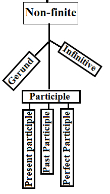

Listen to all these lessons via podcast: podcast name: Alok Pandey learn to speak English fluently.
When a new learner hear the sound gerund-verb. It creates a reason to be confuse. Before going further, it is important to now. What all we have learned in the series of verb.
We have learned
A gerund is a form of a verb that appears as a verb form-4 (ing). But it doesn’t act as a verb. Gerund takes the place of a subject or an object in a sentence. So it is called that if a verb form-4 (ing) plays a role as a subject or an object is called a gerund.
It can be understand by some examples:
In the above sentence verb form-4 (ing) (walking, writing, and sleeping) has taken position as a subject. And reading, smoking, and running as an object.
Those all world looks like as a verb, but they are acting as a subject and an object. Hence it is called a gerund.
Notice that one can only identify the parts of speech by their position and behavior. Verb form-ing comes in different parts of speech. In detail, I have composed the role of the -ing form. Since it comes in three forms (Gerund, main verb, and present participle).
I have tried to explain in detail but in a simple way. I appreciate your feedback.
Must read these important topics.